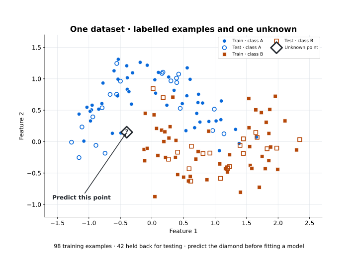
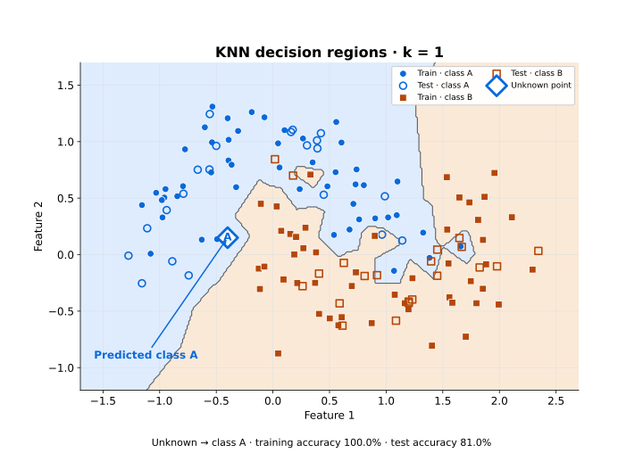
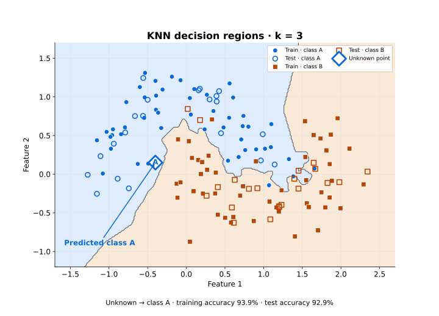
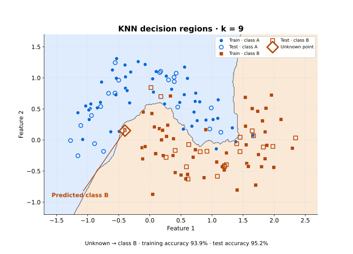
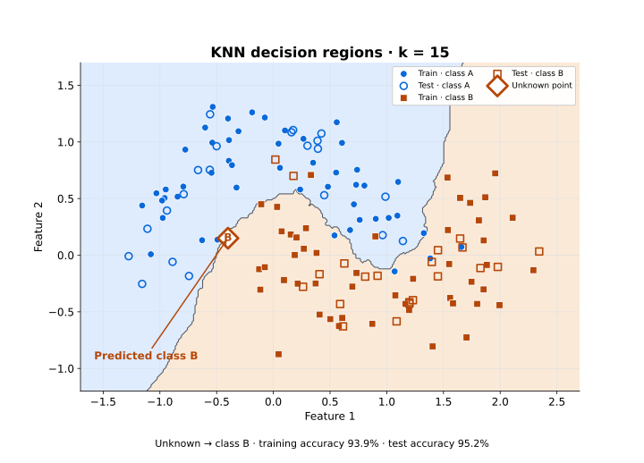
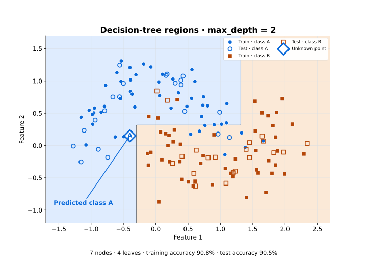
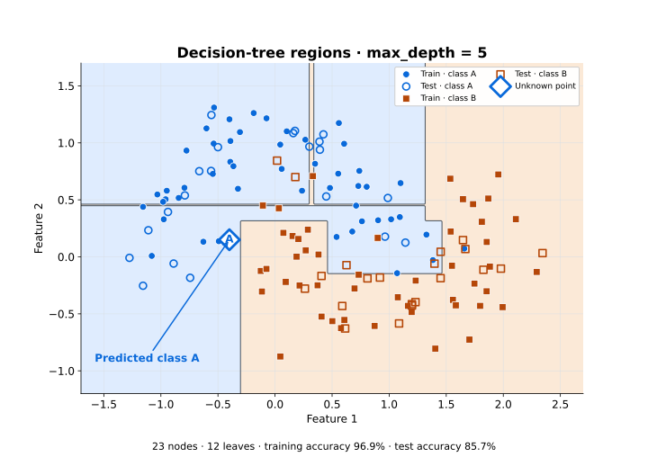
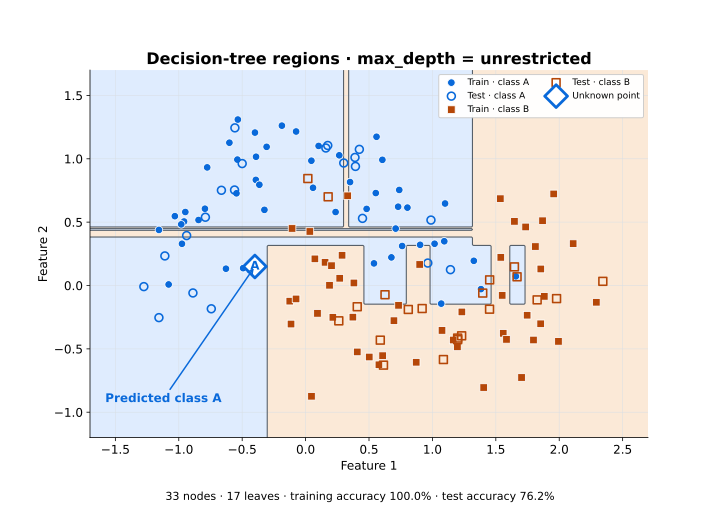
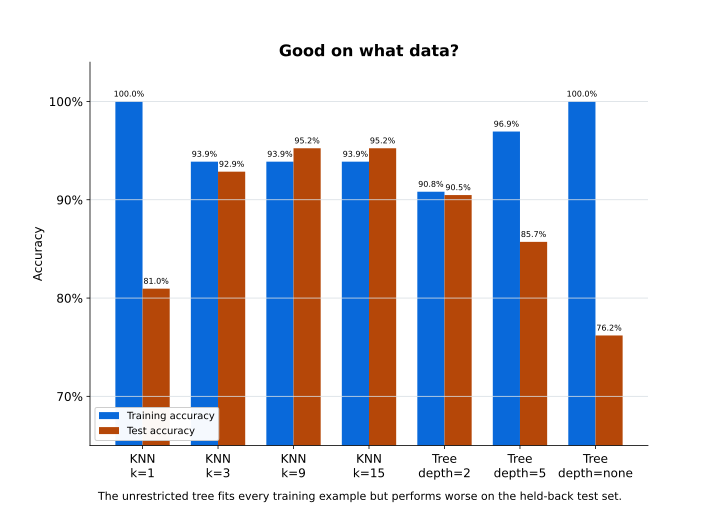

From examples to categories — what are we asking the machine to learn?
Classification is a supervised learning task, which means the training examples arrive with their answers attached.
Suppose we have a set of previous customers, and we already know whether each one repaid a loan.
| Income (€k) | Savings (€k) | Repaid? |
|---|---|---|
| 31 | 4 | No |
| 36 | 7 | No |
| 48 | 14 | Yes |
| 55 | 18 | Yes |
| 63 | 24 | Yes |
Each row is an example. Income and Savings are features — the measurements we chose to represent each case. Repaid? is the class label, the answer we want predicted.
Now a new customer arrives, and the one column that matters is empty.
| Income (€k) | Savings (€k) | Repaid? |
|---|---|---|
| 46 | 12 | ? |
The classifier does not know the answer. That is the entire point — it has to use what the previous examples taught it.
Given the features of a new example, predict its class.
Binary and multiclass
Sometimes there are exactly two possible classes — spam or not spam, fraud or not fraud, approve or reject. That is binary classification. Sometimes there are more — cat, dog or rabbit; red, amber or green. That is multiclass classification. The structure is identical either way; only the size of the answer set changes.
The dataset everything else runs on
The loan table gives us the vocabulary. For the live experiments we switch to one deterministic two-dimensional dataset, so that the geometry is visible on a screen.
make_moons(n_samples=140, noise=0.23, random_state=2)140 points, two numerical features on comparable scales, every point labelled A or B, and one diamond marking the unknown point at [-0.4, 0.15].

Which class would you give the diamond — and what evidence did you just use?
Answer that before any model runs. Then ask what, exactly, your eye was doing. That turns out to be most of this week.
Why this matters this week
Everything from here changes one thing at a time against that picture: first how many neighbours get consulted, then which algorithm is doing the consulting, then how much of the data it was allowed to see.
Ask the neighbours — how does KNN make a decision?
k-nearest neighbours, written KNN, makes a prediction by looking at the labelled examples nearest the new one. That is the whole idea, and it is deliberately unambitious: find the nearby examples, look at their classes, count the votes.

k = 3, three labelled examples vote and the rest take no part. Two of them are A, so the prediction is A. Diagram created for these pages; no external image licence is used.No rule book was written in advance. The decision comes from whichever labelled examples happen to lie nearest.
What does nearest mean?
The examples have to be represented as features first. If both features are numerical, each example becomes a point, and KNN needs a way to measure the distance between points. For two-dimensional numerical data the familiar choice is Euclidean distance — ordinary straight-line distance.
We do not need to do that arithmetic by hand. The consequence is what matters:
KNN relies on the geometry of the representation we chose.
Two examples that are close in feature space are treated as similar. Which creates a design problem immediately.
Is distance always meaningful?
Suppose a customer is represented as age = 37 and income = 75000. The numerical scale of income is enormously larger than the scale of age, so a distance calculation is dominated by income — not because income matters more, but because of the units somebody picked.
A distance can be dominated by one feature simply because of the units it was recorded in.
Today's dataset deliberately keeps both feature scales comparable, so that this effect is held still while we vary something else. In a real problem it is not held still, and scaling becomes part of the representation decision.
What does k change?
k is how many neighbours get consulted. With k = 1 a single nearby example decides. With k = 15, fifteen of them vote and a much larger region influences the answer.
Before running anything:
Will changing
kleave the prediction unchanged?
The scikit-learn version is three lines, and it is not the interesting part:
from sklearn.neighbors import KNeighborsClassifier
model = KNeighborsClassifier(n_neighbors=3)
model.fit(X_train, y_train)
prediction = model.predict(X_new)The behaviour is the interesting part. Same data, same split, same axes, same diamond — change only k.
k = 1 — one example decides | k = 3 — three vote |
|---|---|
 |  |
| Training 100.0%, test 81.0%. Diamond → A | Training 93.9%, test 92.9%. Diamond → A |
Figure 3. At k = 1 every training example gets its own small territory, which is why training accuracy is perfect and test accuracy is the worst of the four. Plots created for these pages by the classification demonstration; no external image licence is used.
k = 9 | k = 15 |
|---|---|
 |  |
| Training 93.9%, test 95.2%. Diamond → B | Training 93.9%, test 95.2%. Diamond → B |
Figure 4. Somewhere between k = 3 and k = 9 the diamond changes class. Nothing about the diamond changed — only how many examples were allowed to speak about it. Plots created for these pages by the classification demonstration; no external image licence is used.
Read the two tables together:
k | Training accuracy | Test accuracy | Diamond |
|---|---|---|---|
| 1 | 100.0% | 81.0% | A |
| 3 | 93.9% | 92.9% | A |
| 9 | 93.9% | 95.2% | B |
| 15 | 93.9% | 95.2% | B |
A very small k makes the classifier hypersensitive to individual examples. A larger k smooths that out — but larger is not automatically better, because eventually examples that are nowhere near the new point are influencing what should have been a local decision.
Why this matters this week
The score is part of the evidence; the picture is the experiment. Ask where the decision region moved, and which examples now reach the diamond. The number alone will not tell you that the answer flipped.
Learn the rules instead — what does a decision tree do differently?
KNN keeps the training examples and consults them when a new case arrives. That is not the only option. A decision tree instead learns a sequence of questions during training, and afterwards just follows them.
Lazy and eager learning
The classical terminology for that difference is lazy against eager learning.
Neither label means better. They describe when the work happens, and what has to be kept around afterwards.
What if we let the tree keep growing?
A shallow tree gets most training examples right. Allow more branches and it can start writing very specific rules that deal with individual training examples. Training accuracy improves. Is that good?
No — and this is the Week 8 distinction arriving with evidence attached:
Learning is not remembering.
The second classifier is the same three lines with one word changed, which is the point: the data stays put, the learning algorithm moves.
from sklearn.tree import DecisionTreeClassifier
model = DecisionTreeClassifier(max_depth=2, random_state=42)
model.fit(X_train, y_train)
prediction = model.predict(X_new)max_depth = 2 — 7 nodes, 4 leaves | max_depth = 5 — 23 nodes, 12 leaves |
|---|---|
 |  |
| Training 90.8%, test 90.5% | Training 96.9%, test 85.7% |
Figure 6. Deeper means more regions, and the regions are axis-aligned rectangles — a tree can only cut straight across one feature at a time. Training accuracy rises by six points while test accuracy falls by five. Plots created for these pages by the classification demonstration; no external image licence is used.
Now remove the limit entirely.

If the data are identical, why do the models disagree?
They disagree because they assume different things about how useful structure should be extracted. KNN assumes nearby examples are similar. A tree assumes the classes can be separated by cuts across one feature at a time.
The dataset does not uniquely determine one model. It never did.
Why this matters this week
Two algorithms, one dataset, two different answers — and neither of them is reading the data wrongly. The choice of learner is a modelling decision, exactly like the choice of representation in Week 2.
Good on what data? — did the classifier actually learn?
Train a classifier on 100 examples, then ask it to predict those same 100. It gets all of them right.
Those are the examples it learned from. Repeating them is not evidence of anything.
The useful question is what happens on examples it did not see during training — which means arranging, in advance, for some to exist.
Training data and test data
The standard move is to hold some labelled examples back before any learning happens.
from sklearn.model_selection import train_test_split
X_train, X_test, y_train, y_test = train_test_split(
X, y, test_size=0.30, random_state=42, stratify=y
)random_state=42 makes the split reproducible, so the same figures come back every time. stratify=y preserves the class proportions. With 140 examples that gives 98 for training and 42 held back.
Keep some evidence outside the training process.
Train on everything and you have no clean check left. The result then looks good for a reason that has nothing to do with the model being any good.
Overfitting, measured
A model overfits when it fits its training data so closely that performance on new data suffers. On this dataset the pattern is not subtle:
| Decision tree | Nodes | Leaves | Training | Test |
|---|---|---|---|---|
max_depth=2 | 7 | 4 | 90.8% | 90.5% |
max_depth=5 | 23 | 12 | 96.9% | 85.7% |
| unrestricted | 33 | 17 | 100.0% | 76.2% |
Training accuracy climbs all the way to perfect. Test accuracy falls the whole way down. The model that memorised every training label is the worst of the three at the only job that matters.

Accuracy, and where it goes blind
For a simple problem the obvious measure is accuracy: what proportion of predictions were correct? 18 of 20 test examples is 90%. Useful — but not the whole story.
Imagine detecting something rare, where 99 of every 100 examples belong to the same class. A system that always predicts the majority class scores 99% accuracy while detecting none of the events anyone cares about.
Accuracy is a useful starting measure, not a definition of a good classifier. The evaluation has to match the problem.
We are not turning this week into a catalogue of metrics. The habit is what carries forward.
Why this matters this week
Three numbers now exist for every model: a training score, a test score, and the gap between them. The gap is the one that says something.
Representation first — what does the classifier actually see?
There is a problem sitting underneath every classifier on this page. The algorithm does not see a customer, an email, a photograph or a patient.
It sees the representation we gave it — and nothing else.
Which takes us straight back to Week 2.
An email is not a feature vector
Suppose the message is FREE tickets available in Galway tomorrow. A classical classifier cannot work with the meaning of that sentence. It needs something countable first.
good and not good both contain good, so counting words alone cannot tell a recommendation from its opposite. One response is to count short sequences of neighbouring words as features too: "not good" is a bigram, and sequences of neighbouring terms in general are n-grams.
We are not building a text classifier today. The point is more fundamental than any particular fix:
Changing the representation changes what the classifier is capable of learning — before any algorithm has been chosen.
Similarity changes too
For some representations, ordinary Euclidean distance is not the most useful notion of similarity. Text as word counts is usually sparse — most entries are zero — and measures such as cosine similarity compare the direction of those vectors rather than the straight-line distance between them.
The formula is not today's target. The design question is:
What should count as similar for this problem?
That is not a question the classifier can answer, because the answer is built into the representation before the classifier ever runs.
Why this matters this week
Week 2 made us decide what a state was, what actions existed, and what counted as a goal. Machine learning does not take that responsibility away. For classification we still decide what an example is, which features represent it, what the labels mean, which data get used for learning, and how success is measured. The algorithm works inside those choices — all of them ours.